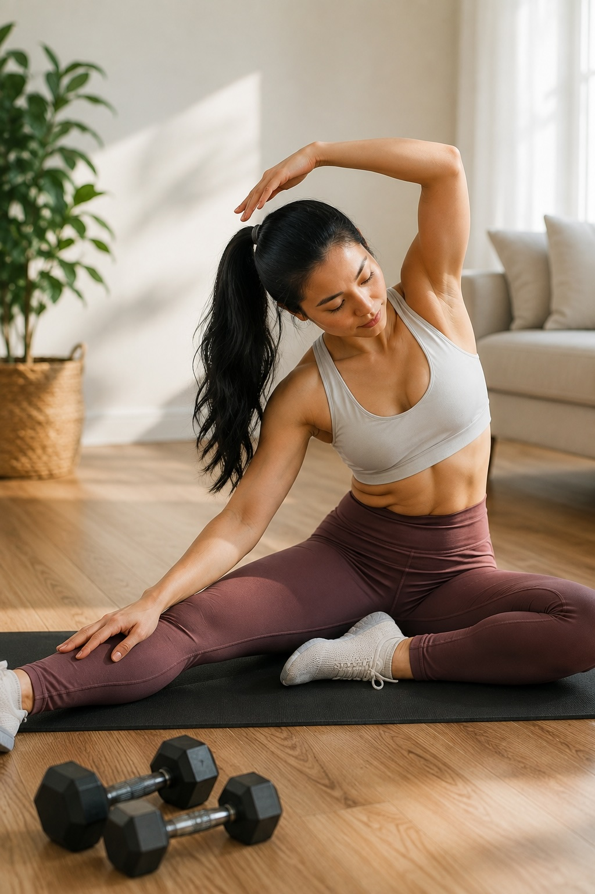

MOVEMENT
Move your body.
Support your health.
Movement does not have to be complicated. Walking, strength, mobility, recreation, and everyday activity can all be part of an active life.
EXPLORE MOVEMENT ↓
MOVEMENT FOR REAL LIFE
You don't have to live at the gym to live an active life.
Physical activity can happen throughout your day. The goal is not perfection. It is finding realistic ways to move that fit your body, preferences, schedule, and life.
EXPLORE
Movement for everyday life.
FEATURED
Small amounts of movement still matter.
An active lifestyle is built through more than formal workouts. Walking, recreation, household activity, and intentional exercise can all contribute.
READ ARTICLE →